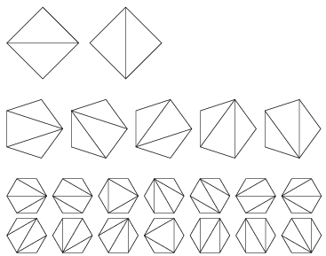
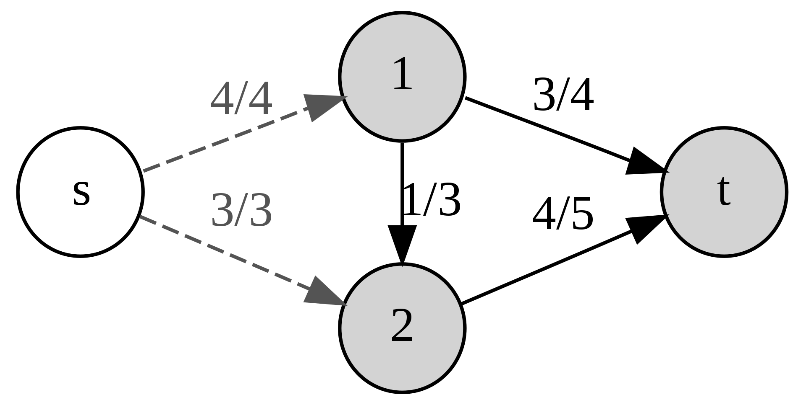
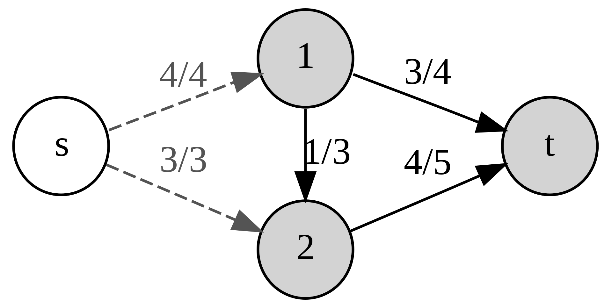
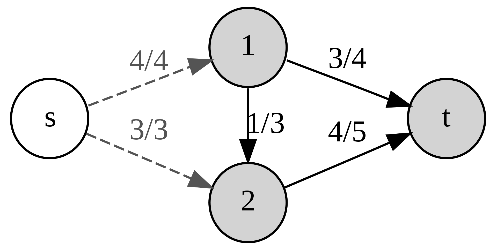
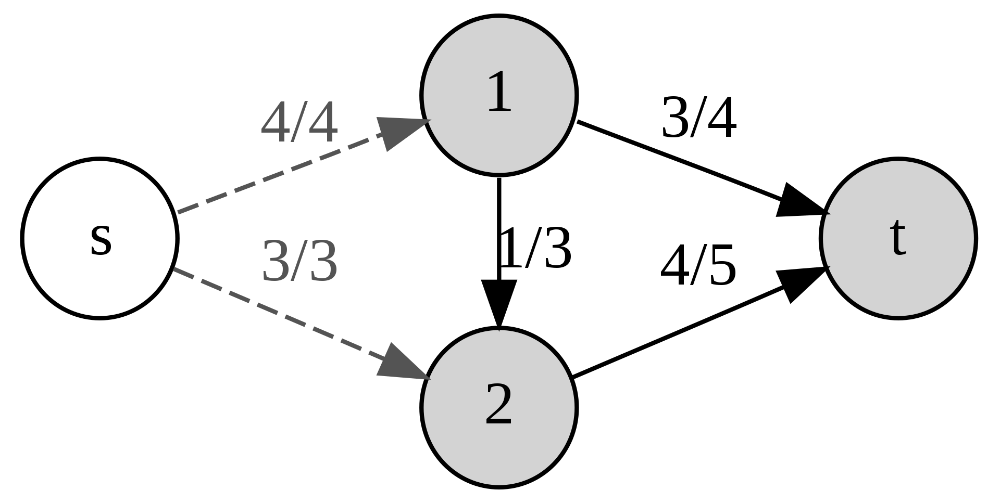

MAT344 Introduction to Combinatorics
2019 Fall
 



Instructors: (no math by email, please include MAT344 in the subject field)
| Instructor | Office | Office hours | Email address | Lectures |
| Balazs Elek | BA6256 | Wed 3-5 | balazse@math.utoronto.ca | Mon 4-6, SS2135 Tue 4-5, SS2135 |
| Henry Yuen | SF2302A | Tue 1-2 | hyuen@math.toronto.edu | Mon 10-12, MP102 Wed 10-11, MP102 |
TAs:
| TA | email address | Tutorials |
| Stanislav Balchev | stanislav.balchev@mail.utoronto.ca | TUT0201 : Tue 1-2 BA2185 TUT5201 : Tue 5-6 BA2195 |
| Keegan Dasilva Barbosa | keegan.dasilvabarbosa@mail.utoronto.ca | TUT0301 : Mon 1-2 GB120 TUT0102 : Thu 4-5 BA2195 |
| Mehmet Durlanik | durlanik@math.toronto.edu | |
| Matthew Sunohara | matthew.sunohara@mail.utoronto.ca | TUT0101 : Thu 4-5 LM161 TUT5101 : Thu 5-6 MP137 |
Text: Our textbook is Applied Combinatorics by Keller and Trotter. Other useful books that we will sometimes refer to are Combinatorics Through Guided Discovery by K. P. Bogart, Combinatorics by J. Morris, Combinatorics and Graph Theory by D. Guichard.
Other resources: The syllabus, some study tips, the Quercus site and the Piazza forum. You may also find Sage helpful for computations.
| # | Week of | Topic | Book chapters | Lecture notes | Problem set | Tutorial | Announcements |
| 1 | Sep 9 | Strings and Sets | 2.1-2.3 | Week 1 | PS 1 | First class is Monday, Sep 9 Last day to enroll is Sep 18 |
|
| 2 | Sep 16 | Binomial Coefficients | 2.4-2.6 | Week 2 | PS 2 | Tutorial 1 | PS 1 due Sept 19, noon |
| 3 | Sep 23 | Recurrence and Induction | 3.1-3.8 | Week 3 | PS 3 | Tutorial 2 | PS 2 due Sept 26, noon |
| 4 | Sep 30 | Pigeonhole Principle, Intro to Graph Theory | 4.1,5.1-5.3 | Week 4 | PS 4 | Tutorial 3 | PS 3 due Oct 3, noon |
| 5 | Oct 7 | Graph Theory basics | 5.1-5.5 | Week 5 | Tutorial 4 | PS 4 due Oct 10, noon Practice questions for the midterm |
|
| 6 | Oct 14 | Midterm | Week 6 | PS 5 | No classes Monday, Oct, 14 Midterm Oct 17, 20:00-22:00, covers everything up to and including Week 5, except planar graphs |
||
| 7 | Oct 21 | Counting graphs, Graph algorithms | 5.6, 12.1-12.3 | Week 7 | PS 6 | Tutorial 5 | PS 5 due Oct 25, noon |
| 8 | Oct 28 | Inclusion-Exclusion | 7.1-7.3 | Week 8 | Tutorial 6 | PS 6 due Nov 2, noon | |
| Nov 4 | Fall break | PS 7 | Last day to drop the class is Nov 4. No classes this week |
||||
| 9 | Nov 11 | Generating functions | 8 | Week 9 | PS 8 | Tutorial 7 | PS 7 due Nov 14, noon |
| 10 | Nov 18 | Exponential generating functions, recurrences | 8, 9.1-9.2 | Week 10 | PS 9 | Tutorial 8 | PS 8 due Nov 21, noon |
| 11 | Nov 25 | Recurrences | 9.1-9.6 | Week 11 | PS 10 | Tutorial 9 | PS 9 due Nov 28, noon Practice questions for the final |
| 12 | Dec 2 | Week 12 | Tutorial 10 | PS 10 due Dec 5, noon |